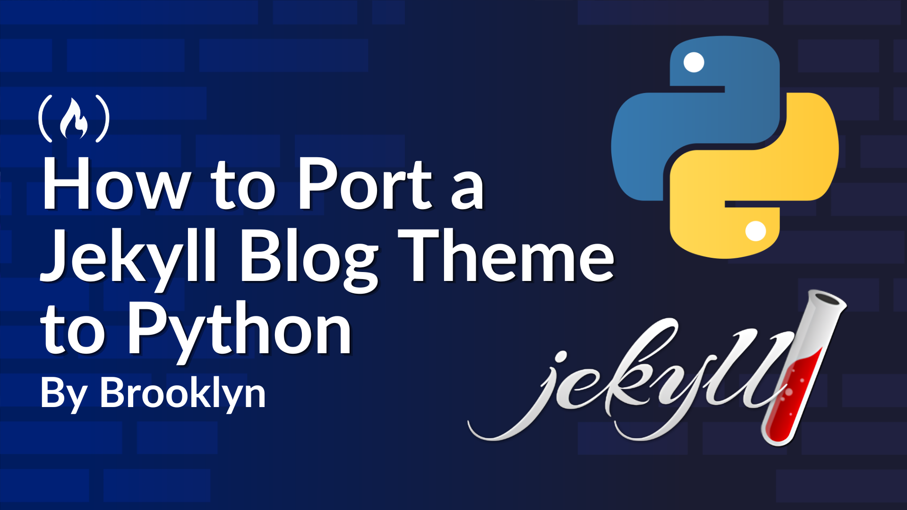
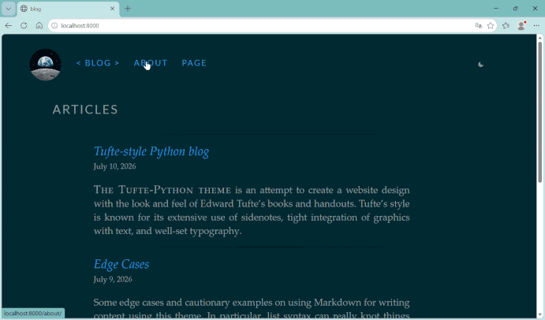
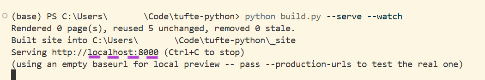

SEPTEMBER 21,2026/ #PYTHON

Edward Tufte is renowned for his work on data visualization and information design, and he's a fierce advocate of high data density and for the removal of "chartjunk" .
This is what tufte-css (and its many ports, including this one) brings to the web: generous whitespace, a serif reading column, and precious sidenotes for supplementary information (instead of disruptive modals).
I liked almost everything about tufe-jekyll blogs except the parts that had nothing to do with writing: a Jekyll powered Ruby version I only ever touched for this one project.
So I rewrote the whole theme in Python. Not because Jekyll is bad. It isn't. But because I wanted a toolchain I'm comfortable with. I was also curious whether I actually understood and could assimilate how a static site generator works.

tufte-python is that port and this write-up acts as a guide: what actually has to happen when you move a Liquid-based Jekyll theme to a Python one, and the specific places I got it wrong before I got it right.
None of this is Jekyll-specific advice. The same pattern applies whether your target is Hugo(GoLang), Eleventy Eleventy (JavaScript), or something else.
Here, you'll tinker on very focused technical points but also discover a way to break things down. If you're porting a different theme, or porting to a different language entirely, remember: the syntax changes but the shape of the challenge is the same.
Compared to dynamic websites, a static site has a simple publishing workflow. In this case, it consists of five steps:
This workflow is simple enough for the needs I have: occasionally publishing posts on my personal Dev blog. It keeps the content readable in a text editor and makes every change easy to review.
Like its predecessor, the actual codebase keeps Jinja2 templates, Markdown, and a YAML front matter for contents. A GitHub Actions workflow builds the site and deploys the generated _site/ directory to GitHub Pages.
There are various reasons for doing it this way.
First, maybe you want out of a toolchain you don't use anywhere else. For me that was Ruby installed on my machine for exactly and only this purpose. It was flaky enough that update my blog occasionally turned into fix my Ruby environment first.
Or maybe you already write in the target language daily, and would rather read and extend a generator you're fluent in than learn just enough of another ecosystem to (eventually) tweak a plugin file.
Or perhaps you want to understand static site generators, not just operate one. Porting forces you to read every template, every custom tag, and every build step closely enough to re-implement it. You learn and retain information differently. It's a very different level of understanding than oh! it works, and it's one of the best ways to achieve mastery.
Before I get into how the port actually came together (including the parts that broke), it's worth seeing where it ends up. The theme I'm describing already exists as a ready-to-ship project. tufte-python comes with its own tutorials and you can have it running locally within minutes.
This gives you something concrete to compare against as you read the rest of this, and something to fork if you'd rather adapt an existing port than build your own from zero.
First, clone it and point it at your own repository (or fork it)
Start by creating a new, empty repository on GitHub. Give it a name such as my-blog:
git clone https://github.com/hyperphantasia/tufte-python.git my-blog cd my-blog
Next, change the origin remote to point to your repository
git remote set-url origin
Then push the project:
git push -u origin main
Next, install the dependencies in a virtual environment
python -m venv .venv # Uncomment to match your OS # source .venv/bin/activate # macOS/Linux # .venv\Scripts\Activate.ps1 # Windows PowerShell pip install -r requirements.txt
Now you'll want to set basic configuration values before your first build.
Open config.yml at the project root:
title: "A Quiet Corner of the Web" author: "Your Name" email: "you@example.com" url: "https://yourusername.github.io" baseurl: "/my-blog" # "" instead, if this is a user/org page permalink: "/articles/{year}/{slug}/" theme: "solAArized" options: mathjax: true
If you're publishing at https://yourusername.github.io/my-blog/, baseurl needs to match the repository name exactly, leading slash and no trailing slash. If you get this one wrong, every internal link and stylesheet reference on the deployed site will 404 while working fine locally (more on why in the point below).
Finally, build and preview it:
python build.py --serve --watch

Open the address the terminal prints http://localhost:8000 (usually) and you should see the demo content that is already in content/. Leave --watch running and edit a post: the page rebuilds without you re-running anything.
One thing is worth knowing now before it costs you a confusing afternoon later: the local --serve preview ignores baseurl on purpose, so links and assets resolve from the root of your dev server instead of a subdirectory.
If you want to check the site exactly as it'll look once deployed, including the real baseurl: run python build.py --serve --production-urls instead. This is meant to preview the site using the production URL structure.
That distinction is the entire reason the works locally, breaks in production bug exists for static sites in subdirectories, and it's worth deliberately testing both modes at least once before you deploy for real.